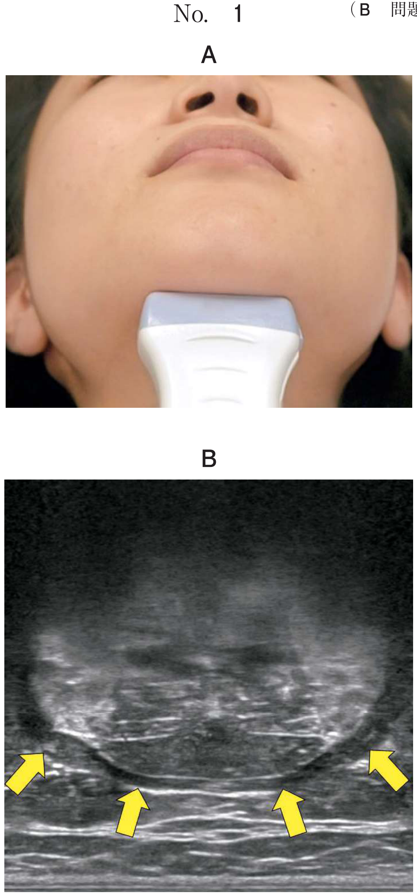

密封小線源を腫瘍内に直接刺入して照射する方法。腫瘍に高線量を集中させ、周囲正常組織への被曝を最小限に抑えられる。口腔癌では根治を目的として行われることがほとんど。
| 分類 | 線量率 | 特徴 | 使用線源 |
|---|---|---|---|
| 低線量率照射 （LDR） |
<2 Gy/h | 線源を直接刺入 数日間留置 |
イリジウム針 金粒子（グレイン） |
| 高線量率照射 （HDR） |
>12 Gy/h | RALSを使用 数回に分割照射 |
イリジウム （遠隔操作） |
Remote Afterloading Systemの略。高放射能のイリジウム線源を遠隔操作で腫瘍内に送り込む方法。
| 線源 | 形状 | 半減期 | 用途 |
|---|---|---|---|
| 192Ir（イリジウム） | 針金状、シード状 | 74.2日 | 低線量率・高線量率両方で使用 |
| 198Au（金） | グレイン（粒状） | 2.7日 | 永久刺入（取り出さない） |
| 125I（ヨウ素） | シード | 60.2日 | 前立腺癌（口腔では使用少） |
| 線源 | 理由 |
|---|---|
| 226Ra（ラジウム） | ほとんど使用されず（防護上の問題） |
| 222Rn（ラドン） | 使用されず |
| 137Cs（セシウム） | 2001年に製造中止 |
| 60Co（コバルト） | 外部照射用（組織内照射には不使用） |
線源を刺入できる軟組織の腫瘍が適応。
線源を刺入できる軟組織が適応。骨に近い部位や深部は不適。
密封小線源による低線量率組織内照射の適応はどれか。1つ選べ。
【解説】密封小線源による組織内照射は、線源を刺入できる軟組織の腫瘍が適応。舌癌は最も代表的な適応（a○）。硬口蓋癌・下顎歯肉癌は骨に近く不適（b×、e×）。耳下腺癌・上顎洞癌は深部で刺入困難（c×、d×）。
口腔癌の放射線治療時の写真（別冊No.5）を別に示す。
治療法はどれか。1つ選べ。

【解説】写真にはRALS（遠隔後装填型）の装置とアプリケータ（チューブ）が写っている。装置から患者に接続されたチューブを通じて線源が送り込まれる。これは遠隔後装填型高線量率組織内照射法（e○）。低線量率組織内照射（c）では線源を直接刺入するため、このような装置は使用しない。
我が国において口腔癌に対する組織内照射に現在用いられている線源はどれか。2つ選べ。
【解説】現在口腔癌の組織内照射に使用されている線源は198Au（金）と192Ir（イリジウム）（a○、c○）。60Co（コバルト）は外部照射用（b×）。226Ra（ラジウム）と222Rn（ラドン）は現在使用されていない（d×、e×）。